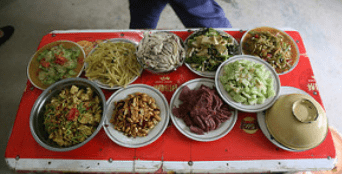
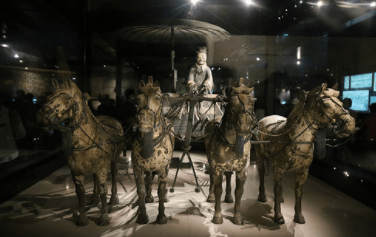
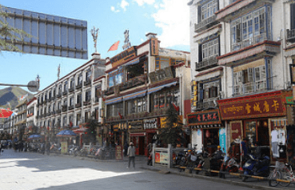
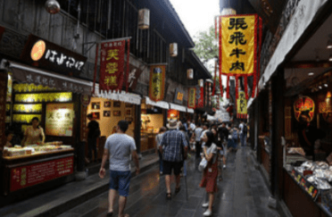
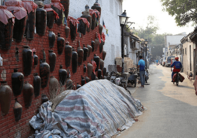

Xi'an, Chengdu, Beijing, and Tibet, China
Aug 27 - Sep 21, 2017
China was a very interesting experience. I haven't gone abroad in over 6 years before this! Last time I traveled abroad was in 2011 to Germany and it felt like an eternity. China has a very rich history with many areas to explore. It's almost the size of United States and 25 days were simply not enough time to see it all! I ventured to most of the central and western part of the country. This country felt like home to me as the culture and people are very similar to Vietnamese. In fact, I grew up with predominately Chinese folks, yet it stil amazes me how much more I still haven't learned from them.
My first journey was to Kaifeng where my girlfriend is from. It was a very difficult trip as we had to connect to Beijing and take a high speed bullet train for 4 hours to Kaifeng's nearest capital, and from there it took a few more hours to get to her house. It was all worth the effort though. Seeing where my girlfriend lived and her family helped me understand how life truly is in China, a country I preconceived as developed and prosperous. I was wrong. People in China may have a structural integrity in their culture and family upbringing, but standard of living is not quite up there yet. I learned that one hardship is the long working hours with high expectation. Kaifeng was buzzing. Honking cars roam the streets with absolutely no sense of yielding. There is a street in Kaifeng that I really liked called Bookstore street. The night market on that street is very lively and I had my very first scorpion! It tasted crunchy and scary at the same time. My girlfriend's families are beyond welcoming and friendly. They really showed me the Asian hospitality and maybe a little too much. They wouldn't let me pay for anything and took me to the Yellow River which is one of the largest rivers in China. It's highly satuated with mud, hence the name. I stayed here for 5 days and headed to Xi'an via a hard sleeper train overnight.
The difference between a hard and soft sleeper is the quality and setting of the beds. Hard sleepers are like dorms on the train with easy open access to the hall. Soft sleepers in China are 4 person encapsulated cabin with doors and beds are really softer. My girlfriend and I got the hard sleeper because soft sleeper usually sells out quickly. It was a fantastic experience! I unfortunately had the top bunk so it was a nightmare climbing up and down at night with my bladder issues. We got to Xi'an the next morning and checked in our hotel. Transportation (mostly buses) in Xi'an wasn't so bad and I was introduced to bike sharing! It's a concept almost unheard of in America. Popular brands include Ofo and MoBike. The way it works is as follows; you download the app on your phone, secure a deposit, find any freaking random bike on the street, scan the QR code and ride, when you are done close it out on your app and pay whatever they charge you. Best part is that you can leave the bike anywhere you want! Of course there's social etiquettes like don't just throw it in the middle of the street and park them on the curb, but unlike the system in USA you don't have to return them to the same place you rent them. The Chinese system isn't going to work here because America isn't densely populated nor can it handle the structure of abandoning bikes anywhere. In Xi'an we went to the Terracotta warrior museum and it was amazing! I absolutely love it. It exceeded my expectation because I had none. It is so impressive that people 2 millenium years ago can build an army of warriors out of clay! Xi'an is also known for its muslims and Muslim Quarter is a must visit. I must confess, I was disappointed with literally every type of food they have there! It is supposed to be the most original and authetic and maybe it is, just not for me. I stayed here for 3 days and flew to Lhasa, Tibet.
Lhasa is the capital of Tibet. You know the dog breed Lhasa Apso? Yeah they originated from here. Let me start out by saying that Tibet is the highlight of this trip. I love it so much. The people and scenario, aaah so beautiful! My biggest complaint however is the altitude sickness. I experienced it so severely that it lasted the whole 7 days when I was there. You know the feeling of a hangover after a long night of drinks? Yeah it's like that except it doesn't go away!! I was constantly tired, dizzy, lightheaded, and nauseous. I think my altitude sickness at some point caused my attitude sickness. To order to enter Tibet you have to have a special permit alongside with your Chinese visa. The catch though, is that foreigners are forced to get the permit through a travel agency. Not by choice I paid near a grand for a 6 day tour that included many beautiful monasteries and Mount Everest. In Lhasa we visited many temples and saw the yellow-hat sect monks. They are so interesting! One thing my girlfriend and I noticed was that most of them had an iPhone! Geez, I wish I was a monk. There is so much politics and controversies that we can't discuss. It's fascinating that China's "One Belt, One Road" policy is so heavily influential in Tibet yet you can almost taste the great disdain from the local. Oh, let's not forget about them yaks! Yak this yak that yaks are everywhere! A yak is nothing more than a hairy cow. In fact, they are so hairy that they will die if they live in lower altitude. I mean come on, even our hotel is called Yak hotel! On our road trip to Mount Everest, we stopped and saw what I considered heaven on Earth. The lushful mountains and everclear skies, words just simply cannot describe. I got pretty close up to Tibetan mastiffs too, they are so adorable and big. The toilets in Tibet always scared the crap out of me. I knew they were bad but boy I was wrong. Some toilets are literally a big hole that gets piled up with absolutely no sanitation whatsoever. Gosh, imagine falling down in those pits. Actually, don't. Is it too late? Are you thinking about it? Okay, moving on. Mount Everest! It is so grand and magnificient. Staying overnight in a tent at the base camp was some experience. I wish I can say it was the best night of my life but heck no. I thought I was going to die there. Let's put it this way, I could not breathe! And since it was in the middle of nowhere, the toilet hole can only get bigger! I love Tibet, if i could go back there I would. After staying here for 7 days I flew to Chengdu.
Chengdu is my second favorite. This Chinese city is so pure and calm. It is known as the most chilled city in China. In fact, I was told that people in Chengdu are so relaxed that in the most recent flood they played Mahjong standing over the water! The food in this province is very spicy due to the use of chili oil and peppercorn. Not exactly my taste bud because I hate the tingling after effect on my tongue, but I do enjoy a new dish here and there. It's hard to find any dish in Chengdu that isn't swimming in chili oil. One of my favorite activity here was the Giant Panda Research Base. It's essentially a zoo only for pandas. The pandas are so cute! Lazy but cute! Leshan Giant Buddha is also a great visit that is only 2 hours away. Seems like Chengdu loves giant things. After checking the buddha out we went to Mount Emei which is one of four sacred religious mountains in China. It is so big and wonderful! I love hiking in places like this. The city feels very modern like a place where I could actually settle in. I was here for 4 days before I flew to Beijing.
Beijing, the capital of China, is awesome! I love it here, it had just the perfect combination of Western influence and Chinese history. There is so much to do here and many food to try. One thing that surprised me was that the night markets were all closed down. Apparently the government banned night markets due to sanitation and health regulations. But nevertheless I tasted many interesting food that I don't how to describe. We stayed in the hutongs, which are ancient narrow streets, and our AirBnb was very futuristic! Literally everything was electronic and I had to carry 4 remotes everywhere I went. The remotes are for the window curtains, electric stair, air conditioner, and lights. I even used an eletric toilet for the first time and that was really something! We went to the Forbidden City and I personally think it was overrated. The crowds are insane and it was just really difficult to take any good shot. Next time if I come back here I will definitely plan the Forbidden City out as a day trip. The subway transportation in Beijing is superb and will get you anywhere in the city. My only problem is that you have to go through security everytime you enter a subway station. Unfortunately I did not get a chance to visit the Summer Palace or Temple of Heaven but I did go to the Great Wall. This heritage was a beautiful sight, although I still don't believe it served any practical purpose back in the days. We went to the Mutianyu section of the wall which is a little more isolated but provides better views. I got the sense that Chinese people love open spaces and walk around. They love going to parks and just chill. On Sept 21 I ended my China trip and flew back to Pittsburgh where I continued my job as a software developer. Saying bye to my girlfriend at the airport was a pain I wish no one would ever have to experience. It was a sensational feeling that tells me we would have to be separated for some time and that I was going to wake up to reality from this amazing journey of self-discovery and cultural apprecation.
China was an amazing trip. I want to thank you my girlfriend Yvonne for showing me around. It's the likes of China and its history/culture that strengthen my resolve to travel the world. I can't wait to embark on a new adventure soon! Until then, thanks for reading!